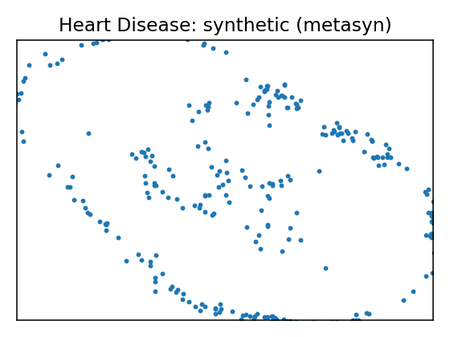
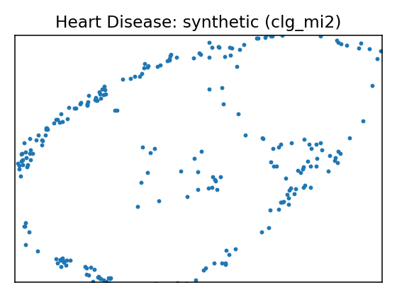
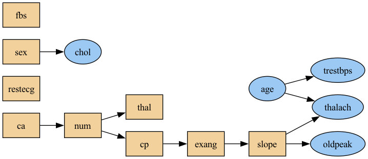
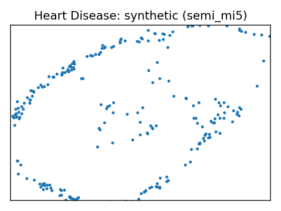
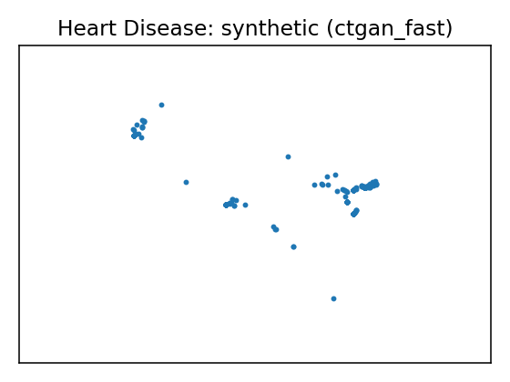
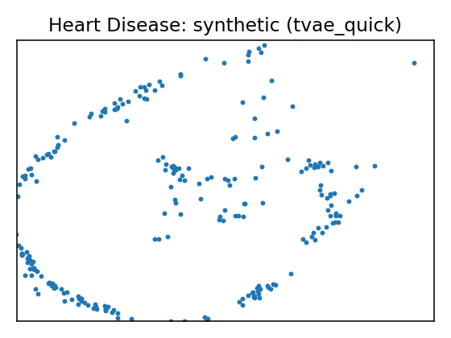

Data Report — Heart Disease
Source: UCI dataset 45
SemMap JSON-LD: dataset.semmap.json · RDFa HTML
Overview
| Metric | Value |
|---|---|
| Dataset | Heart Disease |
| Source | UCI dataset 45 |
| Rows | 297 |
| Columns | 14 |
| Discrete | 7 |
| Continuous | 7 |
| SemMap | SemMap JSON-LD SemMap HTML |
| Missingness | modeled 2 of 14 (seed 42) |
Variables and summary
| variable | inferred | dist |
|---|---|---|
| age | continuous | 54.5421 ± 9.0497 [29, 48, 56, 61, 77] |
| sex | discrete | 1: 201 (67.68%) |
| cp | discrete | 4: 142 (47.81%) 3: 83 (27.95%) 2: 49 (16.50%) 1: 23 (7.74%) |
| trestbps | continuous | 131.6936 ± 17.7628 [94, 120, 130, 140, 200] |
| chol | continuous | 247.3502 ± 51.9976 [126, 211, 243, 276, 564] |
| fbs | discrete | 1: 43 (14.48%) |
| restecg | discrete | 0: 147 (49.49%) 2: 146 (49.16%) 1: 4 (1.35%) |
| thalach | continuous | 149.5993 ± 22.9416 [71, 133, 153, 166, 202] |
| exang | discrete | 1: 97 (32.66%) |
| oldpeak | continuous | 1.0556 ± 1.1661 [0, 0, 0.8, 1.6, 6.2] |
| slope | discrete | 1: 139 (46.80%) 2: 137 (46.13%) 3: 21 (7.07%) |
| ca | continuous | 0.6768 ± 0.9390 [0, 0, 0, 1, 3] |
| thal | continuous | 4.7306 ± 1.9386 [3, 3, 3, 7, 7] |
| num | discrete | 0: 160 (53.87%) 1: 54 (18.18%) 2: 35 (11.78%) 3: 35 (11.78%) 4: 13 (4.38%) |
Missingness model
- Columns with learned missingness: 2 of 14
- Columns without missingness: 12| Column | Missing rate | Missing % | |:---------|---------------:|------------:| | ca | 0.0132 | 1.32 | | thal | 0.0066 | 0.66 |
Fidelity summary
| model | backend | disc_jsd_mean | disc_jsd_median | cont_ks_mean | cont_w1_mean | privacy_overlap | downstream_sign_match |
|---|---|---|---|---|---|---|---|
| metasyn | metasyn | ||||||
| clg_mi2 | pybnesian | 0.094 | 0.1012 | 0.169 | 4.5617 | ||
| semi_mi5 | pybnesian | 0.094 | 0.1012 | 0.169 | 4.5617 | ||
| ctgan_fast | synthcity | 0.4269 | 0.4085 | 0.686 | 30.8935 | ||
| tvae_quick | synthcity | 0.1021 | 0.1128 | 0.2007 | 6.072 |
Models
| UMAP | Details | Structure |
|---|---|---|
 |
Model: metasyn (metasyn)
| |
 |
Model: clg_mi2 (pybnesian)
|
 |
 |
Model: semi_mi5 (pybnesian)
|
 |
 |
Model: ctgan_fast (synthcity)
| |
 |
Model: tvae_quick (synthcity)
|
{kind=link}